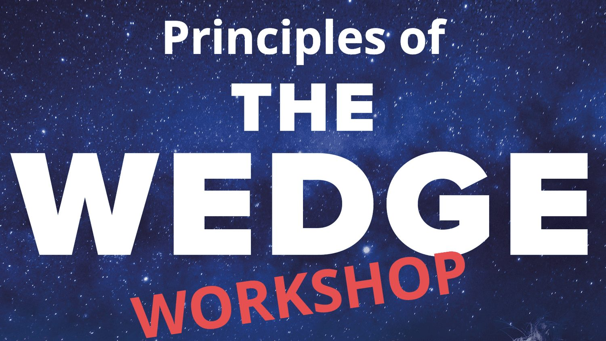

Addiction and Ayahuasca
I was deep in the middle of the Amazon jungle out of my mind on a psychedelic ayahuasca brew and all I wanted to do was talk to God. Instead, I leaned over a dirty bucket and horked up a lifetime's worth of video game addiction. This is probably the most embarrassing story that I ended up telling in The Wedge--not because I'm particularly squeamish about brain chemistry, but because I had to admit to myself (and now you) that I have struggled with the addictive nature of video games since I was a kid. Well, that all stopped for me after I visited a shaman in Peru and spent three days trying to connect with the universal consciousness, only to be told by the spirit of the plant medicine that I had to deal with my own failings first.
This week's video is both intensely personal, and, I hope, thrilling for anyone who is interested in learning how psychedelic medicine can change a person's relationship with addictive habits and substances.

Principles of The Wedge Workshop
Denver, CO - Feb 25th 2023
The February workshop is almost full!
The Wedge is that space between stimulus and response where the magic of consciousness transcends the body's innate reactions. When you jump into ice water and choose not to shiver, decide to put yourself a little harder in an endurance event, or calm your nerves when you feel under threat--you're using the Wedge. After years of writing about the topic I've decided to offer a few in-person events to help people feel how their bodies adapt to different environments. After all, reading is one thing, but the body doesn't use words to understand the world--it operates through the language of sensation.
I call the workshop "Principles of The Wedge" -- because there isn't just one technique, but a whole different approach to how you think about your body's relationship to the world. Over the course of half a day there will be lectures, sauna sessions, ice bathing, breathwork and (light) outdoor exercise. Someday I will offer larger group experiences, but for now I'm limited by the size of my sauna--so there are just 5 spots. If there's a lot of interest I might hold a second workshop on Feb 26th as well. Email me to book your spot.
Details:
When: February 25, 2023
Time: 10:00 AM - evening
Where: Denver CO
Cost: $500
The Vortex Named a Notable Book!
This was a bit of a surprise! Last Friday I learned that The Vortex was selected as one of 25 notable books by the American Library Association.
From the announcement:
Resilience emerges in the wake of a massive cyclone and the political violence it provokes, prompting the birth of the nation of Bangladesh.
If you haven't picked up your copy yet, check it out here.